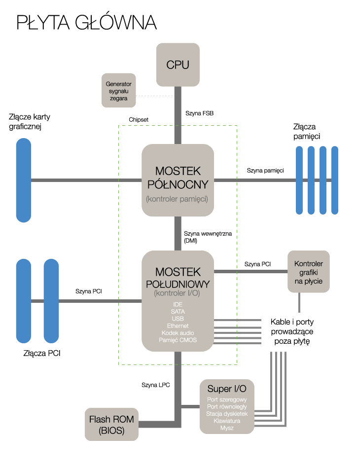

Płyta główna co to?
MotherBoard (MOBO / płyta główna) - jest podstawową częścią komputera, która łączy ze sobą wszystkie inne podzespoły. Od płyty głównej zależy typ o liczba możliwych do zamontowania komponentów oraz sposób i szybkość wymiany danych pomiędzy nimi.
MOBO ma postać dużej płytki drukowanej, na której umieszczone są ścieżki i złącza. Ścieżki umiejscowione są w kilku warstwach płyty drukowanej, służą do przesyłania informacji i prądu pomiędzy komponentami. Gniazda pełnią role dołków, do których wpiąć możemy karty rozszerzeń natomiast złącza służą do podpinania urządzeń peryferyjnych. Płyta główna posiada wiele układów zintegrowanych takie jak układ dźwiękowy lub sieciowy.
W magistrali wyróżniamy szynę sterującą, którą przesyłane są sygnały sterujące pracą urządzeń, szynę adresową służącą do przesyłania adresów komórek pamięci, z których procesor chce czytać lub w których chce pisać, oraz szynę danych, której zadaniem jest przesyłanie danych między elementami komputera.
Jak działa?
Jednym z najważniejszych elementów płyty głównej jest BIOS lub UEFI który ma za zadanie kierować przebiegiem urządzeń póki nie załaduje się system operacyjny. Kości te zamontowane na płycie najczęściej w postaci flash. Mają możliwość zapisu ustawień taktowania poszczególnych komponentów komputera, ich napięciami oraz ich trybami pracy.
Płyta główna jest podstawą dla większości podzespołów komputera. Część z nich jest zintegrowana z płytą (np. chipset i bateria), inne osadza się w gniazdach (m.in. procesor, pamięć RAM i karty rozszerzeń).
Poprowadzone na płycie głównej ścieżki pełnią rolę kanałów komunikacyjnych pomiędzy poszczególnymi układami, a także służą do przekazywania prądu elektrycznego. Elementami odpowiedzialnymi za zsynchronizowane działanie wszystkich komponentów jest chipset.
Na płycie głównej znajduje się chipset nazywany potocznie mostkami - północny i południowy. Mostek północny usadowiony jest najczęściej w górnej części płyty głównej pomiędzy slotem na procesor, a gniazdem AGP/PCIe. Ma on za zadanie nadzorować wymianę informacji pomiędzy pamięcią RAM, procesorem a kartą graficzną. Mostek północny jest połączony z procesorem za pomocą magistrali FSB lub łączy Hyper Transport, układ ten zawiera podstawowy kontroler PCIe lub AGP ( w starszych wersjach) służący do podłączenia najczęściej kart graficznych lub urządzeń wymieniających z procesorem lub pamięcią RAM przesyłając duże ilości informacji.
Mostek południowy pełni kontrolę nad interfejsami dysków,
wszystkimi złączami oraz niektórymi kontrolerami np. USB.
Od stabilności i jakości wykonania płyty głównej zależy wydajność całego systemu.
W najnowszych płytach mostek południowy przejął role północnego, i samodzielnie prowadzi komunikacje na płycie głównej.
Rodzaje
- Standard ATX
- Standard NLX
- Standard WTX
- Standard ITX
- Standard BTX
To jeden z najpopularniejszych standardów. Płyta ATX to rozwiązanie sprawdzające się w obudowach typu Tower. Rozmiar płyty ATX wynosi 305 x 244 mm, a to powoduje, że płyta główna ATX jest wyposażona w dużą liczbę złączy.
Standard konstrukcji obudów i płyt głównych komputerów wprowadzony na rynek przez firmę Intel w 1996 roku. Specyfikacja ta powstała po to, aby ułatwić montaż i demontaż urządzeń w komputerze (np. dyski twarde montowane są na zaczepach, a nie za pomocą śrub), a także dostęp do poszczególnych komponentów komputera, takich jak pamięć RAM czy płyta główna. Komputery oparte na architekturze NLX są produkowane i rozprowadzane przez dużych sprzedawców i praktycznie nieosiągalne w obrocie detalicznym.
Rodzaj płyty głównej stworzonej przez firmę Intel w 1998 roku. Głównym zastosowaniem płyt w standardzie WTX są serwery i stacje robocze typu high-end często wieloprocesorowe wyposażone w kilka twardych dysków.
Standard ITX to typ płyty głównej promowany przez firmę VIA Technologies od 2001 roku. Presja i popyt rynku na urządzenia miniaturowe oraz tanie komputery były powodem wprowadzenia przez VIA produktów w tym segmencie.
Standard konstrukcji płyt głównych oraz zasilaczy i obudów komputerowych, który został zaproponowany w 2004 roku przez firmę Intel jako następca standardu ATX. Zmiany dotyczą przede wszystkim takiego rozmieszczenia elementów płyty głównej, aby strumień chłodzącego powietrza przepływał od przodu do tyłu obudowy komputera, a wydzielające dużą ilość ciepła komponenty oddawały je w jego kierunku.